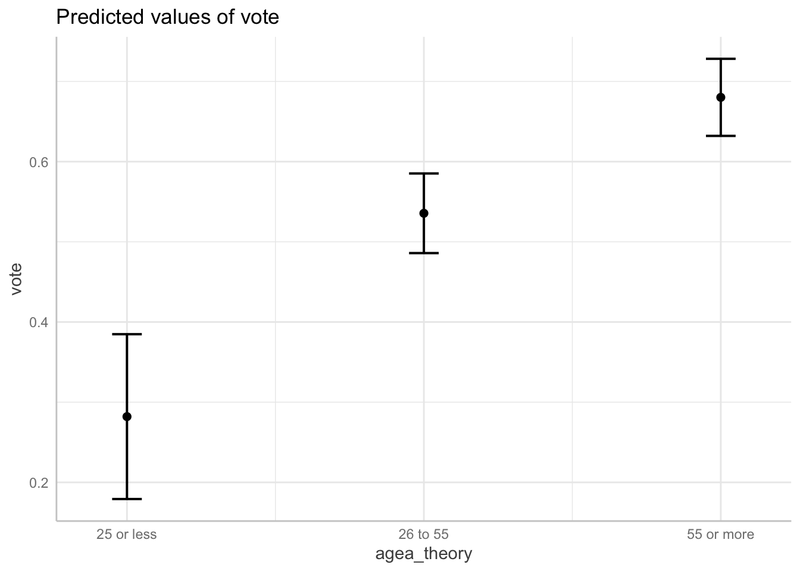
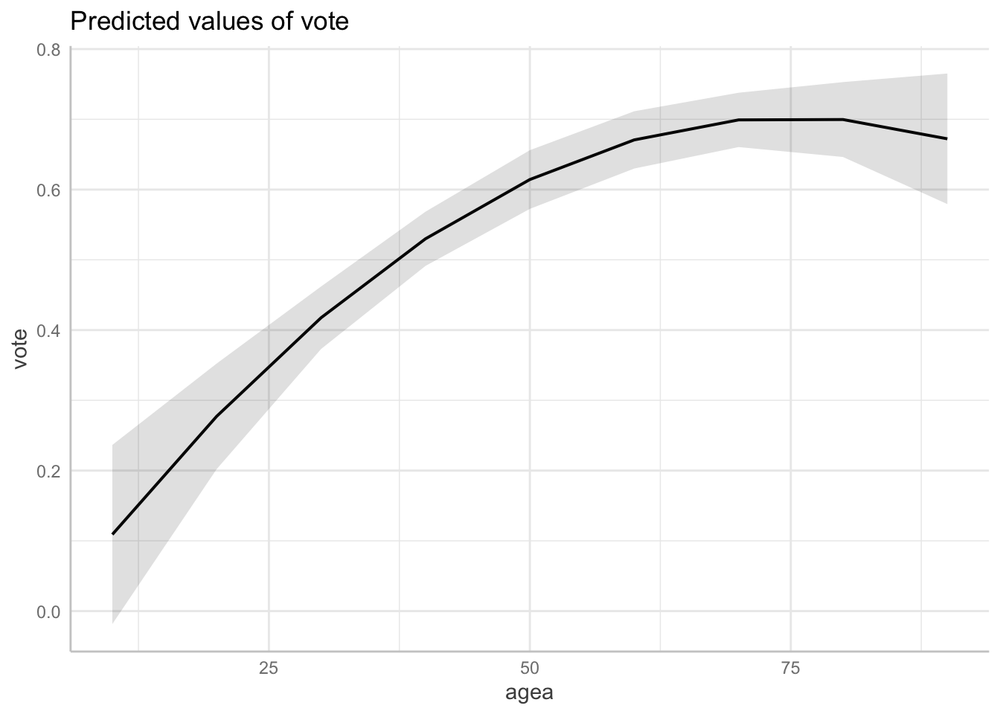

Linearity and normality
In this chapter, we will look into ways of modeling nonlinear relationship, as well solving the problem of nonconstant variance.
Modeling nonlinearity
There are many ways one could go around modeling nonlinear relationship through regression models. We will present three basic, which are common and easy to implement: a) categorization b ) polynomial functions and c) splines, also called piecewise polynomials.
For demonstration, we will use data from the eight round of the European Social Survey. More specificaly, data on voter turnouver per age group in the last pairlamentary elections in the Czech republic. Just by ploting the data, we can notice a nonlinear relationship between voter turnout and age:
ggplot(data = vote, aes(x = agea, y = vote)) +
geom_point() +
scale_y_continuous(labels = scales::percent_format(accuracy = 1)) +
labs(x = "Age", y = "% of respondents who attended the elections")
Age vs voter turnout
We can reach the same conclusion by fitting a linear model and checking the residual plot:
mod_linear = lm(vote ~ agea, data = vote)
plot(mod_linear, which = 1)While the sample size is relatively small, the residual plot suggests that simple linear regression may not give us the full picture on the relationship between age and voter turnout.
Categorization
THe easiest and by far the most popular way to model nonlinear relationship between variables is to simply categorize the independent variable. The categorization can be done in multiple ways and choice is mostly arbitrary. The ggplot2 is particulary helpful, as it offers three categorization function: cut_interval(), cut_number() and cut_width().
The function cut_interval() discretize a metric variable into n group of equal range. For example, to categorize age into three groups with equal range and plot the model:
vote$agea_interval = cut_interval(vote$agea, n = 3)
mod_interval = lm(vote ~ agea_interval, data = vote)
plot(ggeffect(mod_interval))## $agea_interval
As we can see, the age variable was cut into three groups, each with range of 24.65. Alternatively we can use the cut_number() function to categorize age into n groups with (aproximately) the same number of observations:
vote$agea_number = cut_number(vote$agea, n = 3)
mod_number = lm(vote ~ agea_number, data = vote)
plot(ggeffect(mod_number))## $agea_numberThe third option is to discretise the metric variable into categories of equal width. This can be done using the cut_width() function. Notice that it will name the intervals so that they nominally have the same width even if the last interval does not have any observations higher than 90.
vote$agea_width = cut_width(vote$agea, width = 30)
mod_width = lm(vote ~ agea_width, data = vote)
plot(ggeffect(mod_width))## $agea_width
The last option is to base the categorization of our data not on the properties of our sample, such as range or quantiles, but determine our the categories according to a theory. For example, in the context of political behavior, people are often categorized into three cohort: a) age 25 and younger b) 26 to 55 years and c) 56 or more.
vote$agea_theory = case_when(
vote$agea <= 25 ~ "25 or less",
vote$agea <= 55 ~ "26 to 55",
vote$agea > 55 ~ "55 or more")
mod_theory = lm(vote ~ agea_theory, data = vote)
plot(ggeffect(mod_theory))## $agea_theory
While modeling nonlinear relationships using categorization of metric variables is conveniently easy, it also suffer from a number of problems. Harrell (2001) provides a list of major problems, among others:
Estimated values will have reduced precision, and associated tests will have reduced power
Categorization assumes that the relationship between the predictor and the response is flat within intervals
Categorization assumes that there is a discontinuity in response as interval boundaries are crossed.
Cutpoints are arbitrary and manipulatable; cutpoints can be found that can result
in both positive and negative associations
For these and more reasons described by Harrel, the categorization of interval variables should be in most cases avoided.
Polynomials
Another option for modeling nonlinearity is to use polynomial functions. Polynomials functions are ones which include an exponent of a variable. An example of a regression model with polynomial function would be
\[ vote = \beta_0 + \beta_1*age + \beta_2*age^2 \]
with \(age\) being taken to the power of two. This effectively replaces the assumption that the relation between vote and age is a straight line with the assumption that the relationship has a shape of a parabola. We could also use higher order exponents to model increasingly flexible relationships.
There are two types of polynomials - raw polynomials and orthogonal ones. The raw polynomial is simple the variable taken to the power of k. To use second order raw polynomial in a regression model we can write:
lm(vote ~ poly(agea, 2, raw = TRUE), data = vote)or alternatively:
lm(vote ~ agea + I(agea^2), data = vote)Note that both give the same result.
On the other hand, orthogonal polynomials are computed in such a way that the variable \(x^k\) is uncorrelated, i.e. orthogonal, to the original variable \(x\). To compute a second order orthogonal polynomial:
lm(lm(vote ~ poly(agea, 2), data = vote))##
## Call:
## lm(formula = lm(vote ~ poly(agea, 2), data = vote))
##
## Coefficients:
## (Intercept) poly(agea, 2)1 poly(agea, 2)2
## 0.5769 1.0395 -0.4469Which of these two types of polynomials should we choose? Both types of polynomials lead to the same model in terms of fit and predictions. However, the estimated regression coefficients are different. The advantage of raw polynomials is that the regression coefficients have the traditional interpretation of change in \(y\), when \(x\) is changed by one and \(x^k\) is fixed at zero. However, the interpretation of predictors in form of polynomials is difficult no matter what. The major advantage of the orthogonal polynomials is that we can compute the proportion variance explained by each predictor and therefore assess its contribution to the predictive power. If our goal is to interpret the relationship between variables visually through the marginal effects plots, or if we only include the variable as a control, the choice of polynomial type does not matter.
Since the nonlinear relationships are best interpreted visually, we prefer orthogonal polynomials. We can visualize a polynomial regression model using the ggeffects package just like any other multiple linear regression:
mod_poly = lm(vote ~ poly(agea, 2), data = vote)
plot(ggeffect(mod_poly))## $agea
While polynomials are often a better option than the categorization approach, they are not without problems. The main problem is that polynomial functions are non local Harrell (2001), which means that data in one region can strongly influence predicted values in other regions, especially those with small number of observations. This means that the polynomial regression curves often get “wiggly” and overly curved at the ends. Therefore, polynomial regression tend to provide a good fit only in the regions with most data and are often bad at extrapolation. Polynomials are also bad at modeling relationships that are nonlinear only in certain regions and linear in other. For example, a second order polynomial leads by definition to the shape of a parabola and the regression has to predict a curve along the entire range of data. This means that polynomials are bad at modeling relationship that tend to level of at same point. These problems are especially pronounced with higher degrees polynomials.
In the graph below, we can see, how polynomials can be particularly bad at modeling relationships, that are nonlinear in some regions and linear in others. The blue line is for second order polynomial, the blue one for third order one.
Problem with fitting polynomials to asymptotic data
Splines
Last of the popular options for modeling nonlinearity are splines, also known as piecewise regression. The idea behind regression splines is fairly straightforward. Instead of trying to fit a single curve through the entire range of data, we can divide the data into smaller bins and fit separate regression lines through each of them.
ggplot(aes(x = agea, y = vote), data = vote) +
geom_point() +
geom_smooth(method = "lm", se = F, formula = y ~ lspline(x, c(25,50,75))) +
geom_vline(xintercept = 25, linetype = "dashed") +
geom_vline(xintercept = 50, linetype = "dashed") +
geom_vline(xintercept = 75, linetype = "dashed")Example of spline function, dividing data into 4 bins
All splines are defined by the number of knots, i.e the number of dividing lines. In the graph above, we see a visualization of regression model with a linear spline and three knots, which divide the range of data into four bins. Formally:
\[ vote = \beta_0 + \beta_1*age_{<25} + \beta_2*age_{25-50} + \beta_3*age_{50-75} + \beta_3*age_{>75} \]
For details on how the spline terms are computed, see Harrell (2001, p. 22)
Linear splines
The most basic type of splines are the linear splines. These splines fit a straight line through the individual bins. In R, we can use use lspline() function from the lspline package to fit linear splines, with the argument knots specifying the positions of knots/dividing lines. For example:
mod_ls = lm(vote ~ lspline(agea, knots = c(25,50,75)), data = vote )Linear splines coefficients are interpreted in the same way as any other coefficients, for example looking at the summary of our model:
options(show.signif.stars=FALSE)
summary(mod_ls)##
## Call:
## lm(formula = vote ~ lspline(agea, knots = c(25, 50, 75)), data = vote)
##
## Residuals:
## Min 1Q Median 3Q Max
## -0.282133 -0.067824 0.009675 0.059665 0.298871
##
## Coefficients:
## Estimate Std. Error t value Pr(>|t|)
## (Intercept) -0.6688769 0.2421651 -2.762 0.00749
## lspline(agea, knots = c(25, 50, 75))1 0.0439296 0.0104282 4.213 8.06e-05
## lspline(agea, knots = c(25, 50, 75))2 0.0070266 0.0022336 3.146 0.00251
## lspline(agea, knots = c(25, 50, 75))3 0.0042653 0.0021355 1.997 0.05005
## lspline(agea, knots = c(25, 50, 75))4 -0.0009575 0.0053066 -0.180 0.85738
##
## Residual standard error: 0.1151 on 64 degrees of freedom
## Multiple R-squared: 0.6191, Adjusted R-squared: 0.5953
## F-statistic: 26.01 on 4 and 64 DF, p-value: 8.014e-13The first of the regression coefficients after the intercept, called lspline(agea, knots = c(25, 50, 75))1 tells us the slope of the regression line in the first bin, i.e. for the age of 25 or lower. In other words, for people who are 25 years old or younger, we we would expect on average for people one year older to have 0.044 points higher probability of attending elections. Analogously, the next regression terms refers to the slope in the second bin, i.e. between 25 and 50 year. This coefficient is approximately 0.007 percentage points, showing that the difference in voter turnout based on age are much bigger for the voters below 25 years, than for the middle aged group of people between 25 and 50 years.
As always, we visualize the model using a marginal effects plot. However, the ggeffect package has some trouble correctly picking values of the independent variable to evaluate the model at, so we recommend specifying that all values of the independent variable should be evaluated using [all] as follows:
plot(ggeffect(mod_ls, terms = "agea [all]"))
In the example above, each of the regression coefficients represents the slope of regression line in a given bin.
There is however another way how linear splines can be specified. Instead of the slope itself, the regression coefficients may represent the difference between slopes of two neighboring bins. This can be done by setting argument marginal to TRUE:
mod_ls_marg = lm(vote ~ lspline(agea, knots = c(25,50,75), marginal = TRUE), data = vote )
summary(mod_ls_marg)##
## Call:
## lm(formula = vote ~ lspline(agea, knots = c(25, 50, 75), marginal = TRUE),
## data = vote)
##
## Residuals:
## Min 1Q Median 3Q Max
## -0.282133 -0.067824 0.009675 0.059665 0.298871
##
## Coefficients:
## Estimate Std. Error
## (Intercept) -0.668877 0.242165
## lspline(agea, knots = c(25, 50, 75), marginal = TRUE)1 0.043930 0.010428
## lspline(agea, knots = c(25, 50, 75), marginal = TRUE)2 -0.036903 0.011643
## lspline(agea, knots = c(25, 50, 75), marginal = TRUE)3 -0.002761 0.003919
## lspline(agea, knots = c(25, 50, 75), marginal = TRUE)4 -0.005223 0.006729
## t value Pr(>|t|)
## (Intercept) -2.762 0.00749
## lspline(agea, knots = c(25, 50, 75), marginal = TRUE)1 4.213 8.06e-05
## lspline(agea, knots = c(25, 50, 75), marginal = TRUE)2 -3.170 0.00234
## lspline(agea, knots = c(25, 50, 75), marginal = TRUE)3 -0.705 0.48362
## lspline(agea, knots = c(25, 50, 75), marginal = TRUE)4 -0.776 0.44050
##
## Residual standard error: 0.1151 on 64 degrees of freedom
## Multiple R-squared: 0.6191, Adjusted R-squared: 0.5953
## F-statistic: 26.01 on 4 and 64 DF, p-value: 8.014e-13The first spline coefficient is the same as in the previous model (0.043930). On the other hand, all the following coefficients changed. The second coefficient is now -0.036903, which represents the difference in slopes between the first and the second bin. To compute the slope in the second bin, we can simply add the two coefficients together, 0.043930 + (-0.036903) = 0.007027. Notice that this is the same number we got in the previous model for the second spline coefficient. Analogously, we could compute the slope for the third bin by adding the the first, second and third spline coefficient, et cetera.
Computing linear splines this way is particularly useful if you want to test a hypothesis that the relationship between depended and independent variables changes across certain thresholds. For example, if your goal is to test whether the differences in voter turnout based on age differ for people born before and after the fall of the Eastern block, the splines coefficient and its p value can provide this information.
Natural cubic splines
While linear splines provide an easily interpretable way to model nonlinear relationship, they suffer from the same problem as the simple categorization, namely that the results are heavily dependent on the position of the knots (i.e. how is the data split into bins) and that the placement of the knots is often largely arbitrary.
This problem can be solved by using an useful generalization of linear splines, called natural cubic splines or restricted cubic splines. Natural cubic splines are similar to polynomial functions in that we are using a polynomial, more specifically cubic, function to model relationships in our data. There are however two distinctions, which make natural cubic splines a better choice:
- Natural cubic splines divide the data into bins just as linear splines. This solves the problem of non locality, i.e. the fit in one region will not be overly dependent on the fit in other regions like we saw with polynomials.
- The polynomial function is only used in the “inner” bins. In the “outer” bins (i.e. in the first and the last one), a simple linear function is fitted. This reduces the “wiggliness” of the regression line typical for polynomial functions, improves fit at the ends and usually leads to better extrapolation results.
The following graph illustrates how natural cubic splines are fitted. The data in the very first and very last bin will always be fitted using straight line, while in the inside bins curves are used.
Natural splines fit polynomials in the inner bins and lines in the outer ones
The location of the knots can be specified based on theory, however for the natural cubic splines it is customary to put them on quantiles in such a way that the knots are evenly spaced along the entire range of the data. The location of the knots for natural cubic splines should also be symmetric around the median. The most common locations of the knots, based on their number are (Harrell, 2001, p. 27):
| knots | Quantiles | ||||||
|---|---|---|---|---|---|---|---|
| 3 | 0.1 | 0.5 | 0.9 | ||||
| 4 | 0.05 | 0.35 | 0.65 | 0.95 | |||
| 5 | 0.05 | 0.275 | 0.5 | 0.725 | 0.95 | ||
| 6 | 0.05 | 0.23 | 0.41 | 0.59 | 0.77 | 0.95 | |
| 7 | 0.025 | 0.1833 | 0.33417 | 0.5 | 0.6583 | 0.8167 | 0.975 |
For example, if we decide to use three knots (which would divide the data into four bins), we would place the first knot at the 10th quantile, the second at the 50th quantile and the last one at the 90th quantile. More than seven knots are rarely needed (in fact three knots are most often satisfactory), but if more are needed, the logic stays the same.
To fit a natural cubic splines in R, we can use the ns() function from the splines package. The number of knots can be specified in two ways. First, we can select position of the knots manualy through the knots and Boundary.knots arguments. The knots argument is a vector representing the position of the inner knots, while Boundary.knots is a vector representing the position of the "boundary knots, i.e. the very first and the very last one.
To place three knots manually according to Harrel’s recommendation:
quantile(vote$agea, probs = 0.5) # returns value of 53
quantile(vote$agea, probs = c(0.1, 0.9)) # returns values of 25.8 and 80.2
mod_ns_manual = lm(vote ~ ns(agea, knots = 53, Boundary.knots = c(25.8, 80.2)), data = vote)The code above a single inner knot at the 50th quantile and two boundary knots, at 10th and 90th quantile. Unfortunately, the ggeffects package does not seem to work nicely with the output of the quantile() function and so it is better to specify the knots and the Boundary.knots arguments manually like in the code above (separately use quantile to retrieve the value you need and hard-code the value in the lm call in the ns function).
Alternative approach is to specify the knots through the degrees of freedom. The df argument places df - 1 inner knots, plus two boundary knots at the sides. Therefore, to place three knots in total, we would specify df = 2 (a single inner knot + two boundary knots). Again, it is better for ggeffects to compute marginal effects for all values of the independent variable:
mod_ns_df = lm(vote ~ ns(agea, df = 3), data = vote)
plot(ggeffect(mod_ns_df, terms = "agea [all]"))It is worth mentioning that the splines package places knots by default at slightly different positions than that recommended by Harrell (2001). For example, the boundary knots are placed at the maximum and the minimum of the data, when specified by the df argument. However, the differences in the final model are generally speaking minimal. This can be seen in the graph below, where the differences between the models fitted according to the recommendation by Harrel and the default of the splines package are minimal :
ggplot(aes(x = agea, y = vote), data = vote) +
geom_point() +
geom_smooth(method = "lm", se = F, formula = y ~ ns(x, knots = 53, Boundary.knots = c(25.8, 80.2)), alpha = 0.5) +
geom_smooth(method = "lm", se = F, formula = y ~ ns(x, df = 2), color = "red", alpha = 0.5)Natural cubic splines fitted according to Harrel’s adviace (blue) and the default splines package setting (red)
This illustrates the advantage of the natural cubic splines, namely that they are relatively robust to the arbitrary decisions such as the placements of the knots. As long as the number of the knots is identical and they are placed evenly and symmetrically along the range of the data, the results will be mostly the same.
Selecting the position and the number of knots
While splines represent a very flexible option to plotting nonlinear relationship, the researcher must still select the total number of the knots, as well as where to place them, which introduces some subjectivity to the analysis.
Linear splines are very sensitive to both the number of knots and their position. Both should therefore be based on theory and substantive understanding of the domain, as empirically selected placements generally do not reproduce across studies (Harrell, 2001, p. 19).
Natural/restricted cubic splines are more robust to the exact positions and so the number of knots becomes the main question. As a rule of thumb, Harrell (2001, p. 28) recommends three knots for small samples (n < 30), four knots for medium datasets (30 < n < 100) and five knots for large datasets (n > 100). A more empirical way of selection the number of knots is to fit several models, each with different number of knots. Since each knot represent additional regression coefficient, we could simply compare models with different number of knots and select the one which has the best fit, after adjusting for the different number of parameters (using e.g. adjusted R Squared or Akaike’s Information Criterion).
Which approach we should use?
We went over three approaches to model nonlinearity: categorization, polynomials and splines. Which one should be used when?
Categorization is the most problematic of the approaches, given its sensitivity to cutpoints placements, often unreasonable assumptions of the flat relationships between the variables inside a bin, loss of precision and statistical power, as well as other problems described by Harrel. On the other hand, the one big strength of categorization is its simplicity, as most people are able to understand simple means. Therefore, categorization should be considered when we present our results to lay audience, unfamiliar with interpretation of quantitative data.
Linear splines can be seen as a more flexible version of the categorization approach. They still suffer from the arbitrariness of the knots/cutpoints placement, but they do not assume the flat relationship inside bins (note that by flat we mean having no slope) and, if the knots are properly placed, do not suffer from the loss of statistical power. At the same time, the regression coefficient are still easily interpreted without the needs for marginal effect plots. Linear splines are therefore ideal when we want to present our model in a table form to professional arguments (which is common at conferences, technical reports and academic papers, especially when the models are simple enough to be meaningfully presented in a tabular form).
Polynomials in theory represent a simple way to model nonlinear relationship without a need of categorization. However, the fact that polynomial functions are non local and by definition have to follow a polynomial function greatly limits their usefulness, as it makes them both unstable (especially at the “ends”) and unable to model certain types of non-linear relationships (such as when the curve is first bent, but levels out to straight line eventually). This is not helped by the fact that the regression coefficient of polynomial functions are hard to interpret substantially (we usually need to rely on plotting the marginal effects for interpretation).
Natural/restricted cubic splines are the most flexible way to model nonlinearity presented here. They are able to represent relationships of most shapes and do not suffer from the loss of statistical power in the same way as categorization. Unlike linear splines, they are also relatively robust to the placement of the knots. Their most significant disadvantage is the inability to interpret regression coefficient in a substantive manner, a shortcoming which they share with simple polynomials. However, unlike simple polynomials, they can model wide range of relationships, including ones which are nonlinear in some regions and linear in others. This is demonstrated in the graph below, which shows the natural splines fit (blue) and the simple polynomial fit (red). Despite both models consuming the same number of degrees of freedom (i.e. they both have the same demands in term of sample size), the natural splines model is significantly less “wiggly” and represents the data better than the simply polynomial.
ggplot(un, mapping = aes(x = GDPperCapita, y = infantMortality)) +
geom_point() +
geom_smooth(method = "lm", se = F, formula = y ~ ns(x, df = 6)) +
geom_smooth(method = "lm", se = F, formula = y ~ poly(x, 5), color = "red")Natural cubic splines vs Simple polynomial
To summarize: Use categorization when presenting your analysis to lay audience. Use linear splines if you present to professionals, but still want interpretable regression coefficients. Use natural/restricted cubic splines if you are analyzing potentially complex relationships and are comfortable with using marginal effect plots. Avoid simple polynomials altogether.